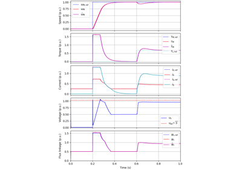
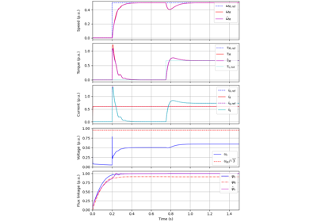

Examples
A collection of Python scripts that demonstrate how to use motulator.
Vector Control


Vector control: 6.7-kW SyRM


Vector control: 2.2-kW induction motor
Vector control: 2.2-kW induction motor
V/Hz Control


Observer-based V/Hz control: 2.2-kW induction motor
Observer-based V/Hz control: 2.2-kW induction motor

V/Hz control up to the 6-step mode: 2.2-kW induction motor
V/Hz control up to the 6-step mode: 2.2-kW induction motor


Two-Mass Systems

Observer-based V/Hz control: PMSM with 2-mass mechanics
Observer-based V/Hz control: PMSM with 2-mass mechanics